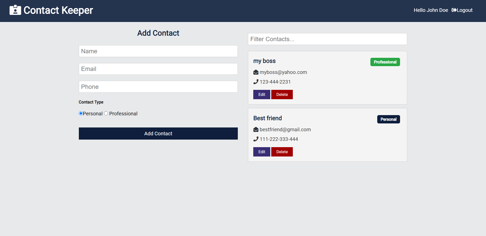
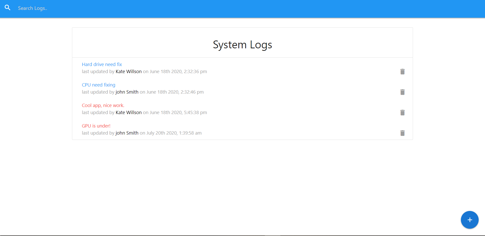
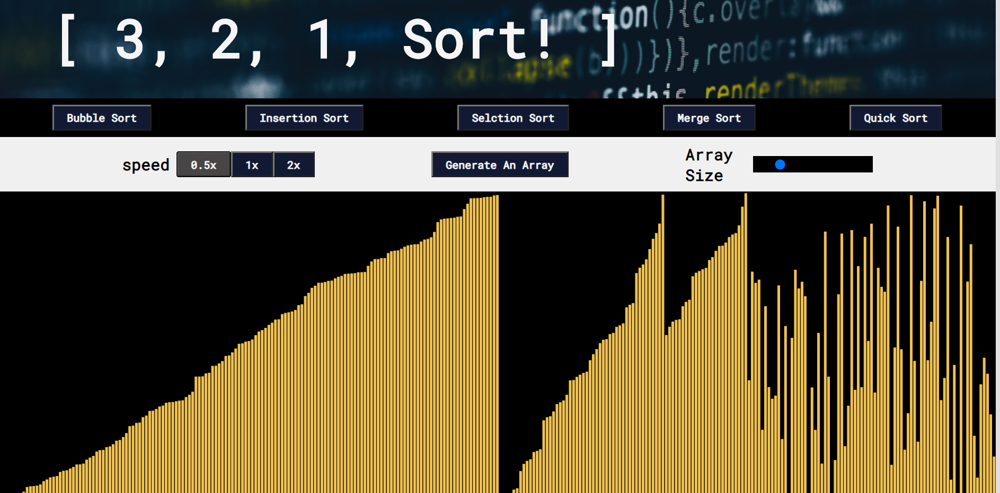

My Work
Check out some of my projects

Let's Stay In Touch!
- React with hooks and context API for the client side.
- Nodejs with Express and MongoDB for the server side (REST API).
- The user can register, add his own contacts, edit, delete and filter them.

Log Everything!
- React with Redux and Materialize for the client side.
- Nodejs with Express and MongoDB for the server side (REST API).
- Add, Update, Delete and Search Logs. Add and Delete Techs!.

Let's Sort Things Out Once And For All...
- HTML , CSS, JavaScript.
- p5 library with async sorting functions for the animations.
- Generate an array, Pick the size of the array and the speed you want the sorting algorithm to move in.